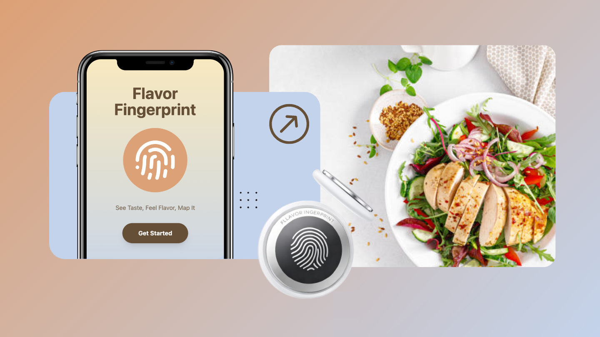
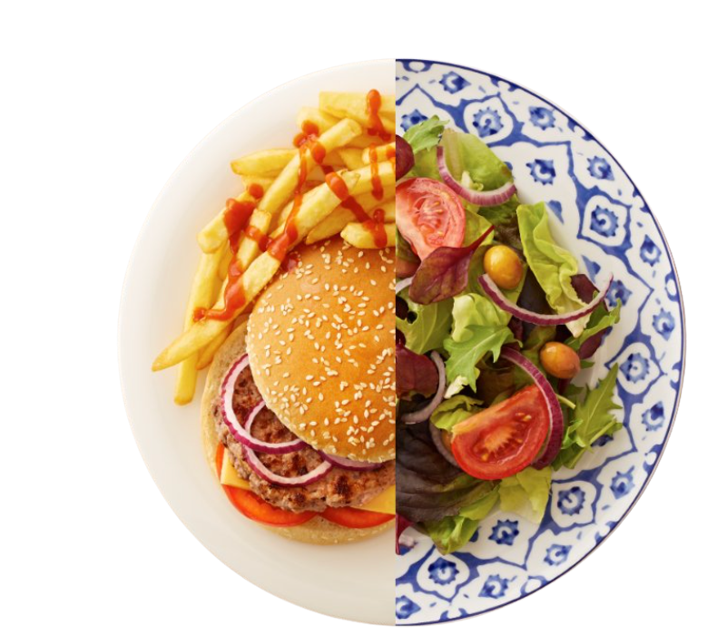
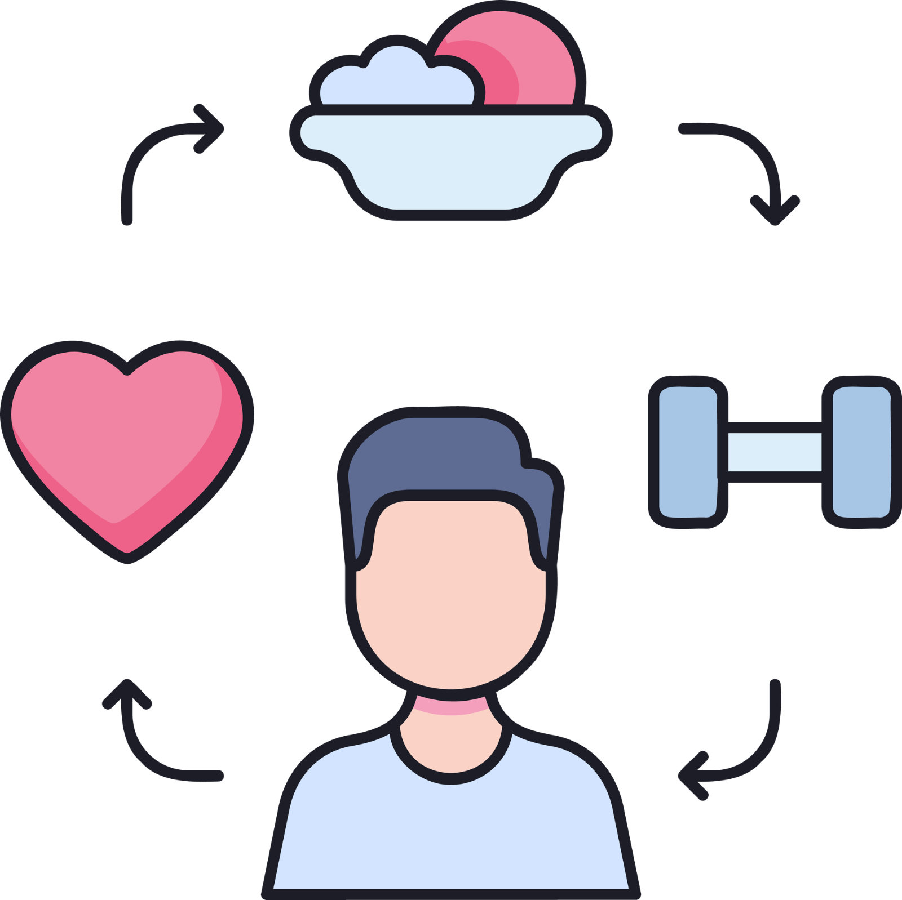

A product that helps people eat healthy without giving up the flavors they love — an app that maps your taste, paired with Flavor Pods that bring it to life.


Individuals looking to get in shape, or monitor what they’re eating.
Individuals who have to follow a restrictive diet due to dietary or health conditions.
Individuals whose sensory functions are declining or lacking due to aging or other factors.

To prevent overstimulating users and misusing the pods, Flavor Pods have a limit of 5 releases.
Each user can only register to one Flavor Pod.
The app only allows a certain range of flavor release, with dosages proportional to the user’s body composition and health information.